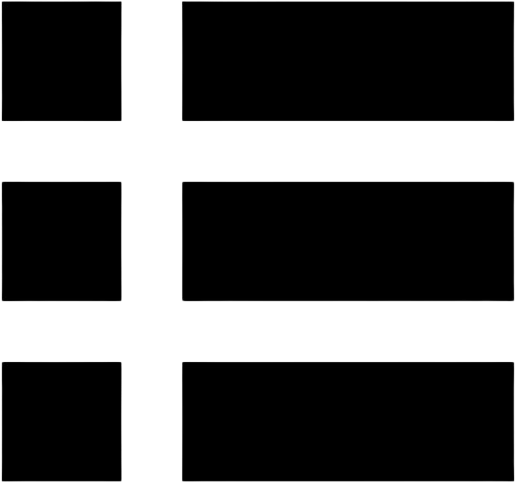
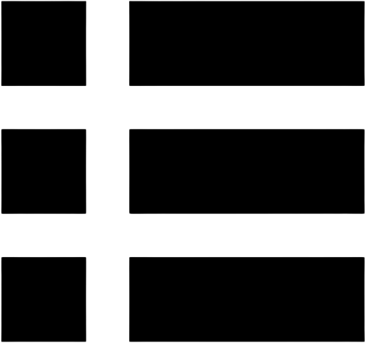
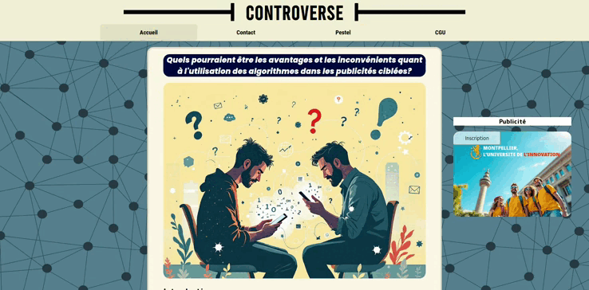

Projet de conception d'un site de présentation de controverse sur les algorithmiques.
Développement d'un site web de présentation de controverse responsive en équipe
Équipe : 4 développeurs
Durée : 3 semaines (méthodologie cascade)
Description : Site de présentation d'une controverse sur les biais algorithmiques.
Type de projet : Universitaire
Contraintes :
- Contraintes temporelles : Un délai court pour livrer un produit fonctionnel et esthétique.
- Cohérence visuelle : Harmoniser le design et le contenu sur plusieurs pages.
- Responsive design : Adapter le site à différents écrans (mobile, tablette, desktop).
Technologies utilisées : HTML, CSS.
Contribution personnelle :
- Responsive Design de la Page d'Accueil.
- Intégration de Publicités Statiques.
- Réalisation du Formulaire de Contact.
Compétences développées :
- Maîtrise du Responsive Design.
- Apprentissage d'harmonisation de style.
- Communication non violente (CNV).
Que j'ai appris :
Ce projet a été une expérience formatrice à plusieurs niveaux :
- Maîtrise du Responsive Design
- Harmonisation d'un sujet sur plusieurs pages
- Création et stylisation de formulaires
Bilan et perspectives :
Ce projet a été une excellente opportunité pour appliquer nos connaissances en développement front-end et travailler en collaboration sous pression.
Maîtrise du Responsive Design :
L'un des défis les plus formateurs de ce projet a été la conception d'une page d'accueil parfaitement adaptative, capable de s'afficher de manière optimale quel que soit l'appareil utilisé. Cette expérience m'a permis de vraiment comprendre ce que signifie créer un design fluide et universel.
L'adaptation aux différents écrans a été au cœur de mon apprentissage. J'ai découvert la puissance des media queries, cet outil magique qui permet de modifier le style en fonction de la taille de l'écran. En définissant des points de rupture stratégiques (typiquement 768px pour les tablettes et 480px pour les mobiles), j'ai pu créer une expérience visuelle qui s'adapte naturellement à chaque device. Ce qui m'a particulièrement marqué, c'est la nécessité de repenser complètement la disposition des éléments selon l'espace disponible, plutôt que de simplement les réduire proportionnellement.
La flexibilité des éléments a été un autre aspect clé de mon apprentissage. J'ai compris l'importance cruciale des unités relatives comme les pourcentages (%), les viewport widths (vw) et viewport heights (vh). Ces unités permettent aux éléments de s'ajuster dynamiquement à la taille de l'écran, contrairement aux pixels fixes. J'ai également exploré les grilles CSS (CSS Grid) et les flexbox, deux outils puissants pour créer des mises en page qui s'adaptent automatiquement au contenu et à l'espace disponible. La combinaison de ces techniques m'a permis de créer des layouts qui restent harmonieux et fonctionnels, quelle que soit la taille de l'écran.
Enfin, j'ai pris conscience de l'importance cruciale des tests multi-appareils. Un design responsive ne se limite pas à l'écriture de media queries - il nécessite une validation concrète sur différents devices. J'ai testé notre site sur divers smartphones, tablettes et ordinateurs, en utilisant aussi les outils de développement des navigateurs pour simuler différents écrans. Cette étape m'a appris que :
- Ce qui semble parfait sur un écran peut être illisible sur un autre
- Les interactions tactiles (sur mobile) diffèrent des interactions à la souris
- Les performances peuvent varier selon les appareils
- L'expérience utilisateur doit rester cohérente à travers tous les supports
Dans cette vidéo, on peut voir tous les rendus des pages sur un téléphone.

Harmonisation d'un sujet sur plusieurs pages :
J'ai réalisé une structure claire en organisant le contenu de manière logique et accessible pour l'utilisateur.
En effet, j'ai décidé qu'il serait logique que l'utilisateur arrive directement sur une description de la controverse, ce que veut mettre en avant le site.
Par la suite, l'utilisateur est libre de choisir s'il veut visité les pages de l'analyse PESTEL de la controverse ou d'écrire un commentaire à l'auteur.
Mon objectif était de maintenir un design uniforme (couleurs, polices, espacements) sur toutes les pages du site, afin d'assurer une cohérence visuelle.
Visuel du site :
Création et stylisation de formulaires
Lors de la réalisation du formulaire de contact pour notre projet universitaire, j'ai découvert que créer un simple formulaire va bien au-delà de la simple fonctionnalité - c'est un exercice d'équilibre entre technique, design et psychologie utilisateur.
L'utilisation d'un HTML sémantique a été fondamentale. En employant les balises adaptées comme "form" pour structurer globalement le formulaire, "input" pour les champs de saisie, "label" pour les étiquettes associées, et "textarea" pour les messages longs, j'ai pu créer une base propre, accessible et maintenable Cette approche sémantique n'est pas qu'une question de bonne pratique, elle améliore considérablement l'accessibilité pour les utilisateurs de lecteurs d'écran et facilite le référencement. Chaque champ a été correctement étiqueté avec son "label" associé, et j'ai veillé à ce que chaque élément ait un attribut name pertinent pour un potentiel futur traitement côté serveur.
Le CSS avancé a transformé ce squelette fonctionnel en une interface attrayante et professionnelle. J'ai travaillé la stylisation des champs pour qu'ils soient visuellement cohérents avec le reste du site, en jouant sur les bordures, les ombres portées et les transitions au survol. Les boutons ont reçu une attention particulière avec des effets de survol (:hover) pour donner un retour visuel immédiat à l'utilisateur. Pour les messages d'erreur.
Mais le vrai défi a été l'expérience utilisateur. Un formulaire n'est pas juste un moyen de collecter des informations, c'est souvent le point de contact final entre l'utilisateur et le site. J'ai donc travaillé à rendre ce moment aussi fluide que possible. La disposition des champs suit une logique naturelle, du plus simple (nom) au plus complexe (message détaillé). J'ai ajouté des placeholders descriptifs pour guider l'utilisateur sans surcharger l'interface.
Cette expérience m'a appris qu'un bon formulaire est bien plus qu'un simple outil technique, c'est une interface humaine qui doit allier fonctionnalité, esthétique et psychologie pour créer une expérience utilisateur positive et efficace.